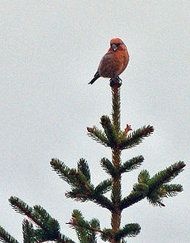
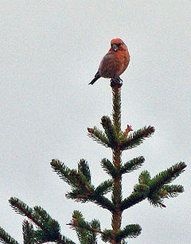

| Parrot Crossbill | |
|---|---|
|  | |
| Male Parrot Crossbill | |
| Conservation status | |
| Binomial name | |
| Loxia pytyopsittacus Borkhausen, 1793 |
| Parrot Crossbill | |
|---|---|
|  | |
| Male Parrot Crossbill | |
| Conservation status | |
| Binomial name | |
| Loxia pytyopsittacus Borkhausen, 1793 |
The Parrot Crossbill (Loxia pytyopsittacus) is a small passerine bird in the finch family Fringillidae.
This bird breeds in the pine forests of northwest Europe and into western Russia. There is also a small population in Scotland, adding to the difficulty of distinguishing it from Common Crossbill and the endemic Scottish Crossbill, both of which breed within its range.
This crossbill is mainly resident, but will irrupt south and west if its food source fails. This species will form flocks outside the breeding season, often mixed with other crossbills.
The crossbills are characterised by the mandibles crossing at their tips, which gives the group its English name. They are specialist feeders on conifer cones, and the unusual bill shape is an adaptation to assist the extraction of the seeds from the cone. The Parrot Crossbill is a specialist feeder on the cones of Scots pine.
Adult males tend to be red or orange in colour, and females green or yellow, but there is much variation.
This species is difficult to separate from Common and Scottish Crossbills, and plumage distinctions are negligible. The head and bill are larger than in either of the other species. The bill is thicker than those of its relatives, and the crossed tips are often not readily apparent. Extreme care is needed to identify this species. The deeper, harder choop or tyuup call is probably the best indicator.
Some pine-feeding populations currently assigned to Common Crossbill in southern Europe may possibly be better referred to either this species or alternatively to new species in their own right, but as yet, research into them is still at a very early stage.

{kind=link}
{kind=link}